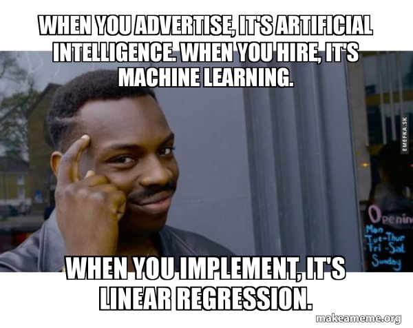

Assignment 4 « Statistics and Regression »
Brief
- Due date: March 13, 2020
- Stencil:
cs1951a_install stats - Data:
/course/cs1951a/pub/stats/data/(will be automatically installed in:~/course/cs1951a/data/stats) - Handin:
cs1951a_handin stats - Files to submit: README.txt, simple_regression.py, multiple_regression.py

Overview
In this assignment you will implement simple linear regression and analyze multiple linear regression. Check out Seeing Theory for help understanding these concepts!
Assignment
You will modify simple_regression.py and multiple_regression.py using bike_sharing.csv. You will also submit README.txt with your answers to the questions for Part 3.
Simple and Multiple Linear Regression
Linear Regression
Regression is used to predict numerical values given inputs. Linear regression attempts to model the line of best fit that explains the relationship between two or more variables by fitting a linear equation to observed data. One or more variables are considered to be the independent (or explanatory) variables, and one variable is considered to be a dependent (or response) variable. In simple linear regression, there is one independent variable and in multiple linear regression, there are two or more independent variables.
Before attempting to fit a linear model to observed data, a modeler should first determine whether or not there is a linear relationship between the variables of interest. This does not necessarily imply that one variable causes the other. Remember, correlation does not necessarily imply causation. For example, moderate alcohol consumption is correlated to longevity. This doesn’t necessarily mean that moderate alcohol consumption causes longevity. Another independent characteristic of moderate drinkers (extrovert lifestyle) might be responsible for longevity. Regardless, there is some association between the two variables. The goal in linear regression is to tease apart whether a correlation is likely to be a causal relationship, by controlling for these other variables/characteristics that might be confounding the analysis.
In simple linear regression, scatter plot can be a helpful tool in visually determining the strength of the relationship between two variables. The independent variable is typically plotted on the x-axis and the dependent variable is typically plotted on the y-axis. If there appears to be no association between the proposed explanatory and dependent variables (i.e., the scatter plot does not indicate any clear increasing or decreasing trends), then fitting a linear regression model to the data probably will likely not provide a useful model. (Note this is not always the case--just as confounding variables might lead a correlation to appear stronger than it is, it might also lead a relationship to appear weaker than it is.)
Shown in the picture below, in simple regression, we have a single feature x and weights w0 for the intercept and w1 for slope of the line. Our goal is to find the line that minimizes the vertical offsets, otherwise known as residuals. In other words, we define the best-fitting line as the line that minimizes the residual sum of squares (SSR or RSS) between our target variable y and our predicted output over all samples i in our training examples n.

A valuable numerical measure of association between two variables is the correlation coefficient , which is a value between -1 and 1 indicating the strength of the association of the observed data for the two variables. A simple linear regression line has an equation of the form Y = a + bX, where X is the independent (explanatory) variable and Y is the dependent variable. The slope of the line is b, and a is the intercept (the value of y when x = 0). A multiple linear regression line has an equation of the form Y = a + b_1X_1 + b_2 X_2 + … + b_n X_n for n independent variables.
Another useful metric is the R-squared value. This tells us how much of the variation in Y can be explained by the variation in X. The value for R-squared ranges from 0 to 1, and the closer to 1, the greater proportion of the variability in Y is explained by the variability in X. For more explanation on R-squared and how to calculate it, read here (this will be very helpful in Part 2!)
Do not confuse correlation and regression. Correlation is a numerical value that quantifies the degree to which two variables are related. Regression is a type of predictive analysis that uses a best fit line (Y = a + bX) that predicts Y given the value of X).
Part I: Data
18 Points
The bike_sharing.csv contains data of a two-year historical log corresponding to years 2011 and 2012
from Capital Bikeshare system, Washington D.C., USA. There are 11 different independent variables that you will use
and one dependent variable (the Count of Use of Bike) you are attempting to predict. More information on the dataset can be found in README_data.txt.
The data functions described below are both in simple_regression.py and multiple_regression.py but most can be re-used from one to the other,
you'll only need to update which variables you are loading. The variables you need are described in each part.
First, open simple_regression.py and load the data, into X, and y variables using pandas. Make sure to load the correct dependent and independent variables.
Take note to update this when implementing multiple_regression.py as you'll be using different variables.
Then, fill in the functions split_data and train_test_split to split the data into train and test datasets.
You should create the following variables:X_train, X_test, y_train, y_test.
A common convention in data science is to make 80% of the data the training data and 20% the test data.
We have provided p = 0.2; use it in your split_data function to obtain this 80/20 split.
You will train your model on the training data and test it on the test data. Furthermore, we expect you to distribute the data randomly, look into
how you can use Python random.random to do this. We set random.seed(1) to guarrantee that we obtain the same
split on every run.
Lastly, when splitting data make sure that
X,y pairs remain intact, that is, every X and its corresponding Y should both be in the same list(either test or train) and at the same index to make sure your model
is accurate. To do this, we recommend using Python zip to form pairs before splitting the data into train and test sets.
Part II: Simple Linear Regression
22 points
The management team of Capital Bikeshare system wants to know how much weather conditions can
predict bikesharing use. Please open simple_regression.py and implement simple
linear regression model that predicts the number of total rental bikes per day (cnt) given the
weather conditions (weathersit).
Fill in the helper functions for mean, variance and covariance. You cannot use numpy functions for these calculations.
Use this in your train function to calculate the (a,b) of your regression model.
Lastly, fill in the test function which is used to evaluate your model. Here you should calculate and print your training
and testing mean squarred error, and your testing r-squared. Refer to the link above on how to calculate r-squared.
For reference, our testing-MSE is: 3379151.988 , our training-MSE is: 3426970.40 , and our R-squared is: 0.0682.
Part III: Multiple Regression
20 points
Wait, the management team realized that there are many more variables that affect bikesharing use in addition to weather conditions. They are concerned that by ignoring these variables, your simple linear regression might be over or underestimating the effect of weather on useage.
Please open multiple_regression.py and using StatsModels , implement a multiple linear regression. From the given 11 different independent variables(disregard registered count and casual user count), your job is to select the ones that could help the prediction model. See how the R-squared value changes as you include different independent variables to your regression model.
Calling function summary on the results returned by the regression model will print out the report containing the value of each coefficient and its corresponding p-value. See the StatsModels docs for more details.
Part IV: Written Questions
40 Points
Answer the following in README.txt
- Interpret the co-efficient for weathersit according to the simple linear regression. Using plain English, what does this coefficient mean?
- Compare the co-efficient on weathersit in the simple regression to the coefficient in the multiple regression that included all variables. Did the coefficient go up or down? Why do you think this is the case?
- In the multiple regression, which variable would you say is "most important" for predicting usage? Defend your choice.
- What does the R-squared value imply about the multiple linear regression models when compared to the simple linear regression model? Do higher R-squared always mean that the model is better? How should you best utilize R-squared to examine the goodness of fit of your linear model?
- Is there a difference between training and testing MSE? Why is comparing this important?
- An interesting statistical phenomenom is Simpson's Paradox. Read this article explaining Simpson's Paradox. Explain how Simpson's Paradox occurs in the context of the exercise vs. disease example (the Correlation Reversal section). (2-4 sentences)
- Using the exercise vs. disease example, what does the article mean by "thinking causally" in order to resolve the Simpson's Paradox? Why should we choose to separate the data into 2 groups for this specific dataset/question? (3-5 sentences)
- Read this article on a recent poll done on people's perceptions of coronavirus and Corona beer. How did news outlets initially frame the "38%" statistic? What was the actual question asked by researchers? (2-3 sentences)
- How could the questions asked mislead survey respondents and/or the audience of the survey? (Think about both the content of the questions as well as the order in which they're asked) (2-4 sentences)
- In addition to the questions asked, what is another flaw in the methodology/reporting of this study? (1 sentence)
Handing In
The folder you hand in must contain the following:
simple_regression.pymultiple_regression.pyREADME.txt
cs1951a_handin stats.
Do not hand in the data files!
Credits
This assignment was updated by Marcin Kolaszewski and Diane Mutako. The ethics questions were created by Huayu Ouyang and Ben Vu. Adapted from the previous TA staff for CS1951a.
Bike Sharing Dataset: Fanaee-T, Hadi, and Gama, Joao, "Event labeling combining ensemble detectors and background knowledge", Progress in Artificial Intelligence (2013): pp. 1-15, Springer Berlin Heidelberg, doi:10.1007/s13748-013-0040-3.